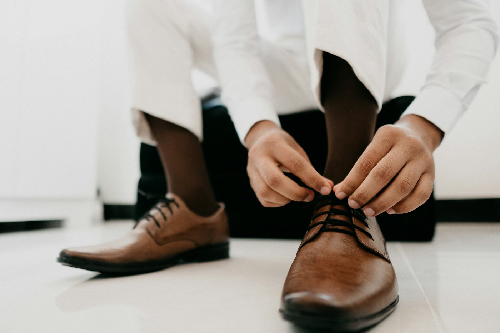
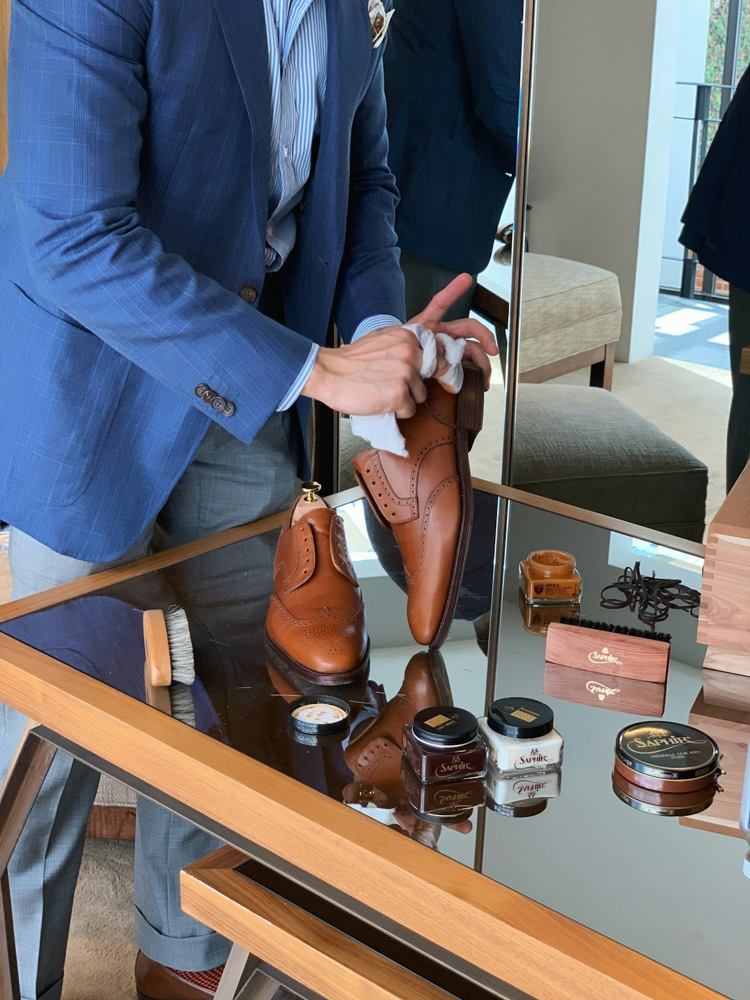

Home / Fit & care
Size guide & care
The right fit, for longer
Comfort starts with the right size. Here’s how to measure at home, which size to choose in each style, and how to keep your shoes looking good.

Comfort firstMeasure at home
Two minutes, one sheet of paper
- 1
Stand on paper
Paper flat on the floor against a wall. Stand with your heel touching the wall, wearing the socks you’ll wear with the shoes.
- 2
Mark your toe
Ask someone to mark the tip of your longest toe. Measure both feet; use the longer one.
- 3
Measure in cm
Measure from the wall to the mark and find the size in the chart below.
- 4
Send it to us
Tell us your length and the style you like. We check it against the actual pair.
Size charts
Adult sizes
Approximate conversions. Brands differ by up to half a size.
Women
| Foot length | EU | UK | US |
|---|---|---|---|
| 22.5 cm | 36 | 3 | 5.5 |
| 23 cm | 37 | 4 | 6.5 |
| 24 cm | 38 | 5 | 7.5 |
| 24.5 cm | 39 | 6 | 8.5 |
| 25.5 cm | 40 | 6.5 | 9 |
| 26 cm | 41 | 7.5 | 10 |
| 26.5 cm | 42 | 8 | 10.5 |
Men
| Foot length | EU | UK | US |
|---|---|---|---|
| 25 cm | 40 | 6.5 | 7.5 |
| 26 cm | 41 | 7 | 8 |
| 26.5 cm | 42 | 8 | 9 |
| 27.5 cm | 43 | 9 | 10 |
| 28 cm | 44 | 9.5 | 10.5 |
| 29 cm | 45 | 10.5 | 11.5 |
| 29.5 cm | 46 | 11 | 12 |
Children’s sizes are on the school shoes page.
Fit by style
Which size in which shoe?
Official shoes & loafers
Snug at the heel, room to wiggle your toes. Leather softens a little with wear; synthetic doesn’t, so don’t buy synthetic tight.
Heels & wedges
Your foot shouldn’t slide forward. If you’re between sizes, take the larger and add a thin insole. An ankle strap adds a lot of comfort.
Sneakers & runners
About a thumb’s width at the toe. Some sporty styles run small; tell us your usual size and we’ll advise.
Sandals & slippers
Toes and heel should sit inside the sole, not over the edge. Adjustable straps help if one foot is bigger.
Boots & gumboots
Allow for thicker socks. In gumboots, take your normal size or one up if you wear them over trousers.
Still unsure?
Come in and try them on, or send us your length in cm and the style. We’d rather spend five minutes on WhatsApp than sell you the wrong size.

Shoe care
Make them last.
Quality is half the shoe; care is the other half. A few minutes a week keeps a good pair going for seasons.
- Let wet shoes dry naturally, away from the fire
- Stuff with newspaper to keep their shape
- Rotate pairs so each one can rest a day
Care by material
Leather & leather-look
- Wipe off dust with a damp cloth
- Polish once a week with matching colour polish
- Use shoe trees or newspaper inside
Suede
- Brush gently with a soft suede brush
- Keep away from rain where you can
- Rub marks with a clean pencil eraser
Canvas & white sneakers
- Remove laces and wash by hand in cool soapy water
- Dry in the shade so they don’t yellow
- Whiten with a little toothpaste on an old brush
School shoes
- Polish on Sunday night, every week
- Check soles mid-term for wear
- Dry overnight after a wet day; never on the jiko
Know your size now?
Browse the collection and tap “Order”. WhatsApp opens with the style named; just add your size.